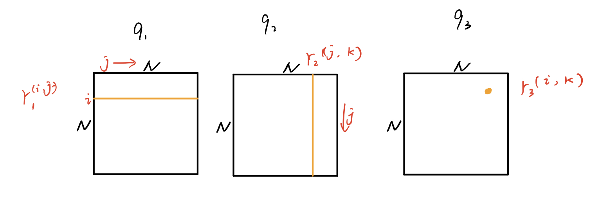
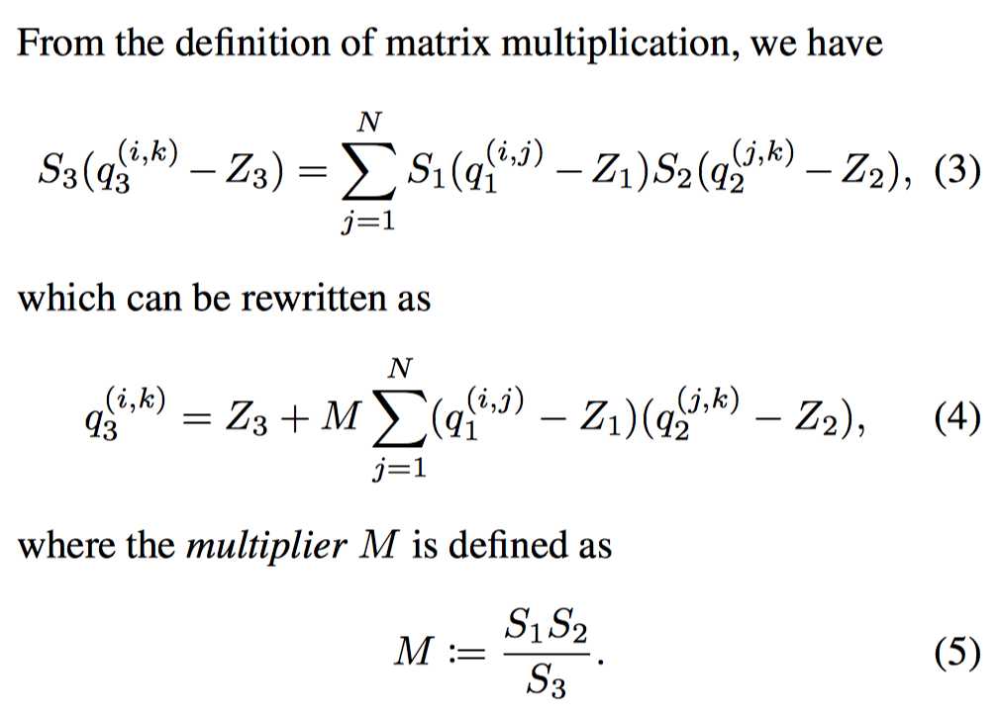
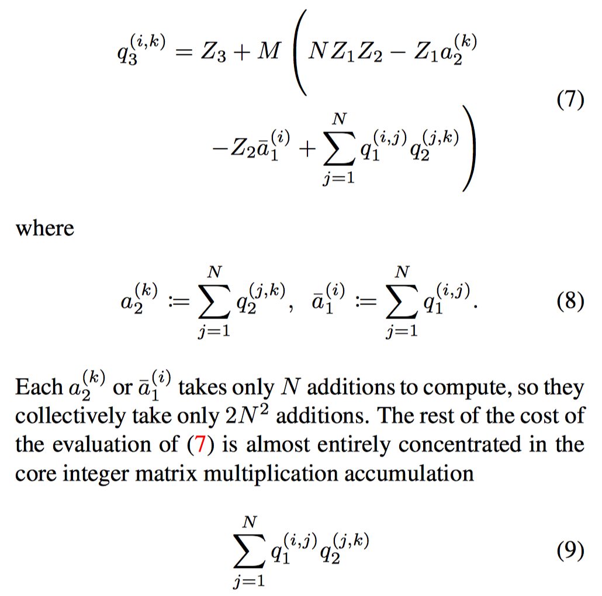
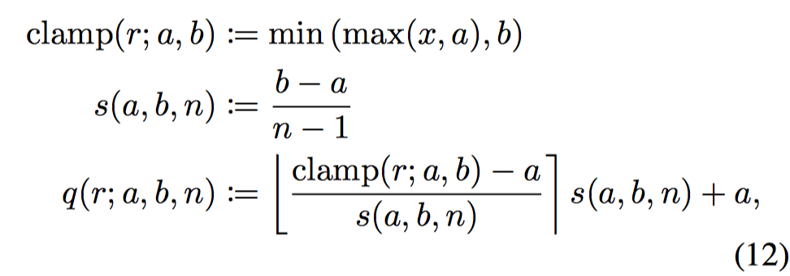
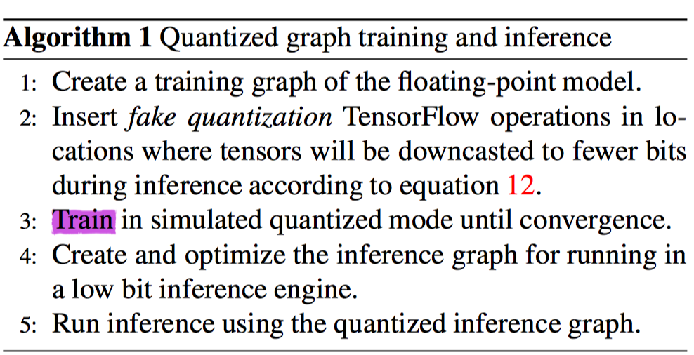
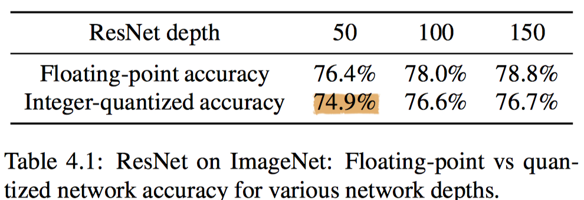
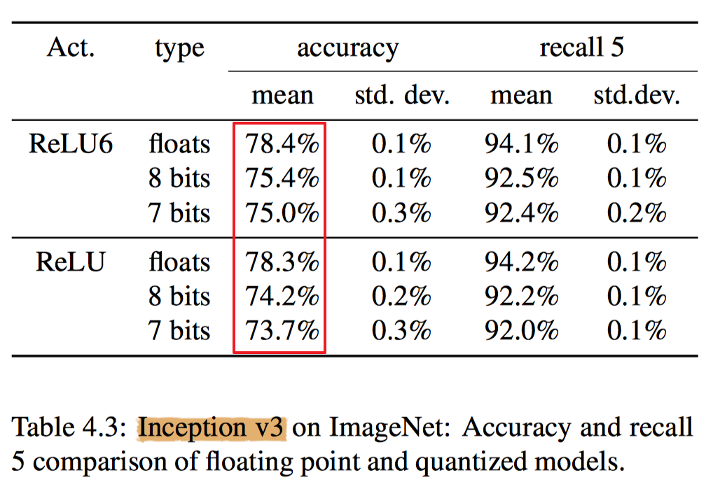
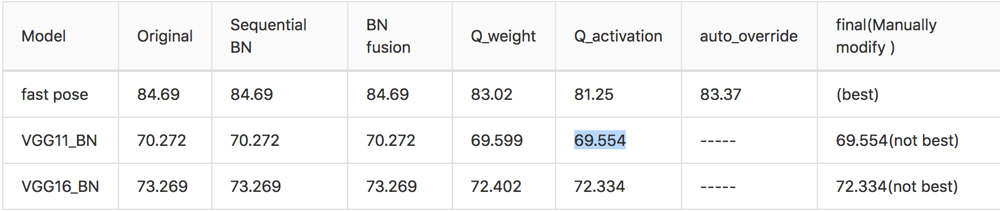

Tensorflow Lite: Speeding up mobile inference with low precision
Quantization scheme
$$r = S(q-Z)$$ where constants $S$ and $Z$ are quantization parameters, intergers $q$ are mapped to real numbers $r$.
| param | type | |
|---|---|---|
| S | Scale | fp32 |
| q | quantize | uint8(w and a) int32(b) |
| Z | Zero-point | uint8(w and a) 0(b) |
Note:
- 怎么表示负数?
通过设置合适的$Z$来表示负数
Integer-arithmetic-only matrix multiplication
我们考虑weight矩阵的第i行，与activation矩阵的第k列相乘，如下图所示

直接计算的话，需要将uint8扩展为int16，进行乘法运算

将原来的运算展开后，便可以使用uint8的乘法进行运算

Learning quantization parameter
以量化到uint8举例，$2^8=256$一共能表示256个大小不同的数，表示的范围为$[a, b]$，先定义如下函数：

由于我们采用uint8，所以$n=2^8=256$，所以只需要确定$[a, b]$就可以确定量化的参数$S, Z$
$$
S = \frac{b-a}{2^8} \\
Z = \frac{2^8a}{a-b}
$$
- weight
对于w来说，只是简单求min和max得到$[a, b]$ - activation
对于a来说，在traning时使用exponential moving average(EMA)的方式获取$[a, b]$
Workflow

Note:
这个量化流程中，需要进行重新训练，不过按照上边的道理分析，对于8bits不进行训练最后的结果应该也不会太差，对于更低bit的量化，重新训练则是十分重要的。
Experiments
主要是accuracy 和latency之间的tradeoff，在ARM cpu上进行latency测试


说句实在话，8bits量化的效果不怎么好呀，而且是uint8，再加上一个$Z$,相当于9bit了，但是结果accuracy下降了好几个点。下面是Qcode方式量化的结果，两个网络结构不同，还没来得及做更多的实验，但可以对比一下:

Comparison with Qcode method
| Features | Google8bits | Qcode 8bits |
|---|---|---|
| scheme | $r = S(q-z)$ type(q)=uint8 | $r = 2^nq$ type(q)=int8 |
| quantized training | True | False |
| BN fusion | True | True |
| ARM cpu latency experiment | True | False |
| More experiment(face detection) | True | TODO |
| Hardware friendly | False | True |